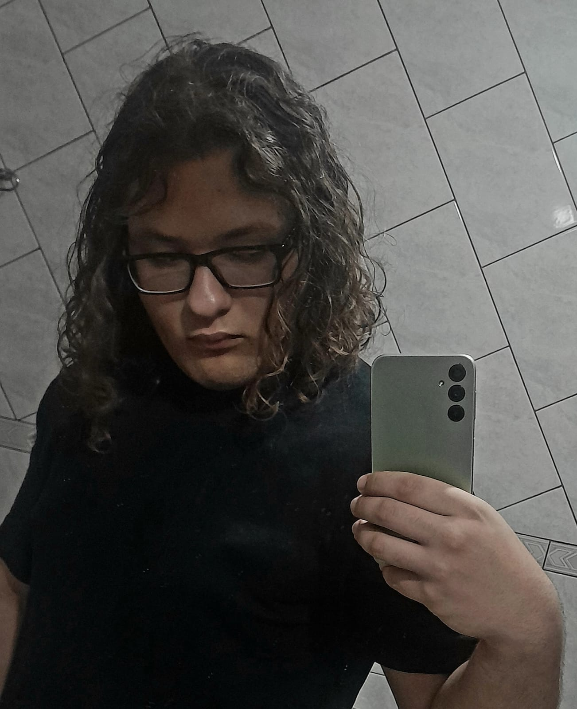

|

⌞Thigas ⊹ 12/04/2005 ⊹ ele/dele⌝
Meu nome é Thiago, mas todos me conhecem como Thigas na Mídia! Sou estudante de graduação de
Ciência da Computação na Universidade Federal do Paraná (UFPR). ⌞Sobre esta página web⌝ Minhas primeiras interações com essa página web foram por volta de Agosto de 2023, quando entrei apenas para descobrir
como funcionavam os elementos de html. Nada tinha saído daquela breve época, e a página se manteve apenas com alguns H2 flutuantes numa imensidão branca por um longo tempo. ⌞Interesses⌝✦ Passatempos e Mídias que gosto: RPG, VideoGames, Poemas, Música, Interpretação/Atuação ✦ Jogos Favoritos: Outer Wilds, Omori, Portal 2, Gris, Enigma do Medo, Undertale/Deltarune, Hollow Knight, The Binding of Isaac, Minecraft, Terraria, Garry's Mod, Spore, Starbound, Elden Ring, Brawlhalla. ✦ Mangás/Animes Favoritos:One Piece, Sora Yori Mo Tooi Basho, Steins;Gate, Fullmetal Alchemist, Dr. Stone, Haikyuu, Jojo, 20th Century Boys, Oyasumi Punpun, Dandadan, Eizouken, Vinland Saga, Re:Zero ✦ Filmes Favoritos:Koe no Katachi, Laranja Mecânica, Viva: A vida é uma festa, ✦ Musicos/Bandas Favoritas:O Grilo, Jovem Dionísio, Lagum, Jambu, Linkin Park, Chico Buarque, Cartola, Rubel, Beach Bunny, Nelward, bbno$, ✦ Cor Favorita: VERDE! ✦ Comidas Favoritas:Strogonoff, Empadão, Lasanha, Pizza, Sushi, Sorvete, Pavê, VEJA MEUS MARCOS ACADÊMICOS VEJA MEUS MARCOS ACADÊMICOS VOLTAR PARA A PÁGINA PRINCIPAL VOLTAR PARA A PÁGINA PRINCIPAL |